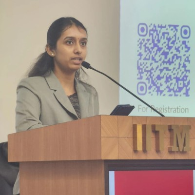
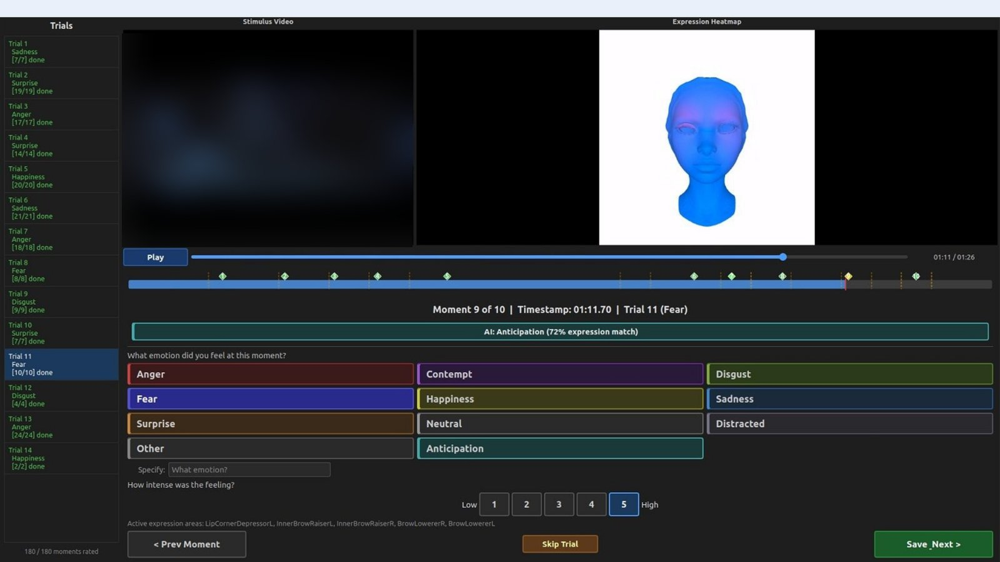

Published · CVPR SVC 2026
BlendME
A VR blendshape microexpression dataset with retrospective self-annotation.
112 filtered clips
Explore projectMS by Research · Touch Lab, IIT Madras
I study how wearable sensors capture facial expressions, and how those signals can support digital humans and immersive experiences. At IIT Madras, I work on VR-native datasets and facial expression representation.

From facial signals to immersive experiences.
Published · CVPR SVC 2026
A VR blendshape microexpression dataset with retrospective self-annotation.
112 filtered clips
Explore project
Research project
Standalone adaptive VR cinema, including the BlendME II dataset and recognition component.
36 viewing-study participants
Explore projectResearch topic
Research topic
Published work.
CVPR 2026 Workshop on Subtle Visual Computing
Best Paper Honorable Mention
2026 back to 2019.
Published at the Workshop on Subtle Visual Computing. Best Paper Honorable Mention.
Research Associate, July 2023 to present. Headset face capture and facial emotion analysis with Dolby Laboratories through its University Research Collaboration program.
Department of Applied Mechanics and Biomedical Engineering. Advisor: Prof. Manivannan Muniyandi.
Python Developer, My Assessment, August to October. Winner, PALS NEXGEN 3D 96-hour hackathon.
Began the degree, completed in 2023.
Contact
I am seeking a PhD position starting Fall 2027.
Thesis submission March 2027 · Convocation July 2027